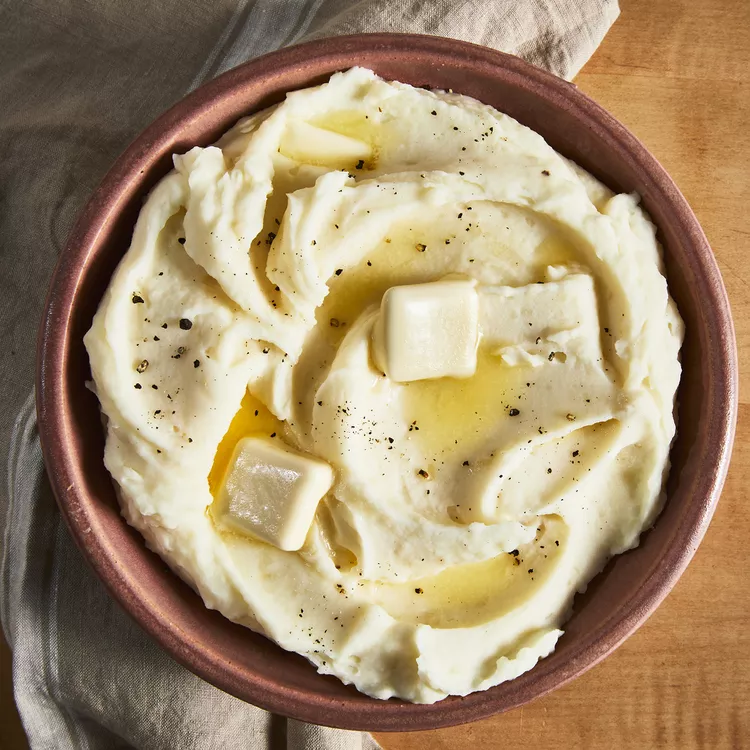

Mashed Potatoes

Description
Ready to learn how to make the best mashed potatoes ever? You're in luck! This top-rated mashed potatoes recipe, made with just a few ingredients, produces crowd-pleasing results every time.
Ingredients
- 2 pounds baking potatoes, peeled and quartered
- 3 cloves garlic, peeled, or to taste (Optional)
- 1 cup of milk
- 2 tablespoons butter
- Salt and ground black pepper to taste
Directions
- Step 1
Bring a large pot of salted water to a boil. Add potatoes and garlic, lower heat to medium, and simmer until potatoes are tender, 15 to 20 minutes.
- Step 2
When the potatoes are almost finished, heat milk and butter in a small saucepan over low heat until butter is melted.
- Step 3
Drain potatoes and return to the pot. Slowly add warm milk mixture, blending it in with a potato masher or electric mixer until potatoes are smooth and creamy. Season with salt and pepper.